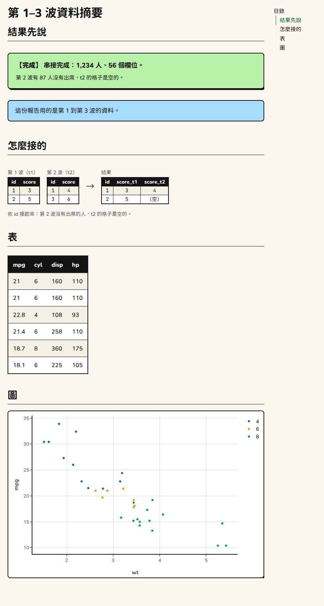

kitDesign 不只給 Shiny app
用。Quarto（.qmd）做的報告、使用手冊、工作坊講義，也可以和
app
長得一樣：同樣的顏色、圓體、黑框，結果用狀態框、提示框、圖解寫出來。

只適用 HTML 輸出（format: html）。PDF、Word
沒有這些樣式。
1. 兩個小檔案
放在 .qmd 旁邊（同一個資料夾）。
kit.scss：KIT 的顏色與字型，和
kit_theme()、這個網站一樣。
/*-- scss:defaults --*/
$primary: #006835;
$success: #006835;
$body-bg: #faf7f0;
$body-color: #141414;
$border-color: #141414;
$border-width: 2px;
$link-color: #006835;
$headings-font-weight: 700;
$navbar-bg: #c6d033;
$font-family-sans-serif: "Chiron GoRound TC", sans-serif;
$font-family-monospace: "JetBrains Mono", "Chiron GoRound TC", Menlo, Consolas, monospace;
/*-- scss:rules --*/
html { font-size: 17px; }
body { line-height: 1.65; }
pre.sourceCode, div.sourceCode { background: #fffdf5; border: 2px solid #141414; border-radius: 8px; }fonts.html：讓瀏覽器向 Google Fonts 下載圓體與 JetBrains
Mono。
<link rel="preconnect" href="https://fonts.googleapis.com" data-external="1">
<link rel="preconnect" href="https://fonts.gstatic.com" crossorigin data-external="1">
<link rel="stylesheet" href="https://fonts.googleapis.com/css2?family=Chiron+GoRound+TC:wght@400;700;900&family=JetBrains+Mono:wght@400;700&display=swap" data-external="1">data-external="1" 不要拿掉：要做成單一 HTML
檔（embed-resources: true）時，有它，字型才不會被塞進
檔案裡。圓體切成上百個片段，全部塞進去，檔案會超過 100 MB；有它，大約 1
MB。代價是打開檔案時要有網路， 沒有網路就是系統字型。
2. YAML 標頭
---
title: "第 1–3 波資料摘要"
lang: zh-TW
format:
html:
theme: [brite, kit.scss]
include-in-header: fonts.html
toc: true
embed-resources: true # 要寄給別人時：做成單一 HTML 檔
execute:
echo: false # 報告只看結果，不看程式碼
message: false
warning: false
----
theme: [brite, kit.scss]：Bootswatch Brite 加上 KIT 的顏色，和 app 的kit_theme()同一個底。 -
lang: zh-TW：目錄的標題才會是「目錄」。
3. 第一個程式碼區塊
```{r}
#| include: false
library(kitDesign)
# 狀態框、檢查清單、程式碼這些值物件印成 HTML（不然印出來是 R 的 list）
for (cls in c("kit_status", "kit_check", "kit_checklist", "kit_code")) {
registerS3method("knit_print", cls,
function(x, ...) knitr::knit_print(htmltools::as.tags(x), ...),
envir = asNamespace("knitr"))
}
```
```{r}
use_kit() # KIT 元件的樣式與小程式
```use_kit()
放一次就好。之後每個元件都是一個程式碼區塊的最後一行。
4. 放元件
## 結果先說
```{r}
kit_done_status("串接完成：1,234 人、56 個欄位。",
notes = "第 2 波有 87 人沒有出席，t2 的格子是空的。")
kit_callout("這份報告用的是第 1 到第 3 波的資料。")
```
## 怎麼接的
```{r}
kit_diagram(
before = list(
kit_dg_table(data.frame(id = 1:2, score = c(3, 5)), "第 1 波（t1）"),
kit_dg_table(data.frame(id = c(1, 3), score = c(4, 6)), "第 2 波（t2）")
),
after = kit_dg_table(data.frame(id = 1:2, score_t1 = c(3, 5), score_t2 = c("4", "（空）")), "結果"),
caption = "依 id 接起來：第 2 波沒有出席的人，t2 的格子是空的。"
)
```
## 表與圖
```{r}
kit_static_table(head(mtcars[, 1:4]))
```
```{r}
library(plotly)
p <- plot_ly(mtcars, x = ~wt, y = ~mpg, color = ~factor(cyl),
colors = unname(kit_chart_colors())[1:3], # 三類就給三個顏色
type = "scatter", mode = "markers")
kit_plotly_style(p, fonts = FALSE) # 字型已經由 fonts.html 載入
```能用的元件
文件裡沒有 Shiny 的 server，所以只有「看的」元件能用：
| 能用 | 函式 |
|---|---|
| 頁首 |
kit_header(title, subtitle, logo = "inline")（標誌直接寫進頁面） |
| 頁面說明 |
kit_tab_guide()、kit_steps()（「看步驟」的收合也會動） |
| 狀態框 |
kit_status()、kit_done_status()、kit_error_status()、kit_stale_status()
|
| 提示框 | kit_callout() |
| 檢查清單 |
kit_checklist()、kit_check()
|
| 用 R 怎麼做 |
kit_code()（「複製」按鈕也會動） |
| 圖解 |
kit_diagram()、kit_dg_table()
|
| 資料表 |
kit_static_table()、kit_num()
|
| 圖 |
kit_plotly_style(p, fonts = FALSE)、kit_chart_colors()、kit_chart_sequential()
|
不能用：模組（*_ui()／*_server()）、下載按鈕、通知、還差什麼，和其他要
session 的函式。 kit_button()
畫得出來，但按了不會做事。
要注意
-
kit_plotly_style()一定要fonts = FALSE。 預設會附一個指向 Google Fonts 的 dependency， Quarto 處理不了，會停在「Dependency kit-plotly-fonts … is not disk-based」。字型已經由fonts.html載入了。 -
kit_chart_colors()要unname()，而且類別有幾個就給幾個顏色。 有名字時 plotly 會拿名字 （blue、orange…）去對類別，對不上，點就不見了；顏色比類別多時 plotly 會在顏色之間內插，出現灰色。 -
值物件要先登記
knit_print（第 3 節的迴圈）。沒有登記，狀態框、檢查清單、程式碼印出來是 R 的 list。 - 套件載入的訊息（
Attaching package之類）用execute: message: false關掉，不然會出現在報告裡。